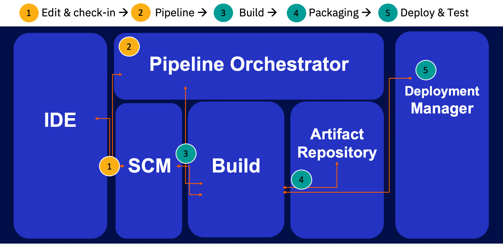

Introduction to CI/CD for z/OS
CI/CD for z/OS applications
Introduction to CI/CD
CI/CD a development process that empowers enterprises to develop and deliver higher quality software more frequently. The “CI” in “CI/CD” stands for “continuous integration”, while the “CD” can stand for either “continuous delivery” and/or “continuous deployment”.
“Continuous integration” means that new code is merged into the shared code base at more frequent intervals (for example, daily or weekly). This allows for more frequent builds of the code base, enabling more frequent automated testing against the application builds, which can help identify integration issues earlier in the development cycle, when they are easier to fix, and subsequently reduce issues closer to release.
“Continous delivery” is when the changes to an application are automatically tested and uploaded (delivered) to a repository, where it can then be deployed to different environments. This practice can reduce time to deployment due to the integration of continuous testing and development, and can thus reduce the cost of development without compromising quality. Although the deployment itself is automated, manual approval is still required to authorize the deployment.
“Continuous deployment” is when the changes to an application are automatically deployed to a production environment for use by your customers. It is considered to be one step further than continuous delivery, and might or might not be implemented depending on business needs. With continuous deployment, the developers and automated tests in production-like test environments are trusted enough that the new code is considered approved when it passes the tests. Deployment no longer requires manual approval and is also automated to speed the time to customer value.
CI/CD is powered by a set of tools that automates processes in the software development lifecycle. As a whole, the CI/CD pipeline can enable teams to adopt Agile and DevOps workflows so that application teams can deliver changes more frequently and reliably, and respond more efficiently to feedback from operations. For this reason, CI/CD is considered a best practice in today’s industry standards. IBM’s general DevOps page provides additional information on CI/CD in the context of DevOps.
Applying CI/CD to z/OS applications
Legacy z/OS development tools and processes have traditionally made it difficult for z/OS applications to participate in modern CI/CD pipelines. However, the IBM Z DevOps solution allows you to integrate z/OS applications into the same CI/CD pipelines used by today’s distributed applications. That means z/OS teams can now leverage the same modern, industry standard, open source technologies for integrated development environments (IDEs), version control, automation, and more. You can learn more about how IBM supports DevOps for the mainframe at the IBM Z DevOps and hybrid cloud continuous integration pages.
The defining components of the IBM Z DevOps solution are Git-based source code management and the IBM Dependency Based Build (DBB) tool. When these components are integrated together with other industry-standard CI/CD pipeline tools, the developer workflow looks something like the Day in the life of a developer described in the following section.
Day in the life of a developer
With the IBM Z DevOps CI/CD pipeline in place, an application developer would typically use the following (or similar) workflow when completing a development task (for example, a bugfix or feature enhancement):
Tip: The IBM Z DevOps CI/CD pipeline is based on Git as the source code management tool. If you are new to Git and its concepts (such as branches and pull/merge requests), you can check out the Source code management page to get familiar with the terminology so you can better understand the workflow below.
- The developer will start by cloning or pulling a copy of the application code from a central Git repository down to her local workstation.
- She can then create a new personal branch of that code for her specific task. This will allow her to work on the task in isolation, in parallel with her team, without having to worry about other development activities disturbing her work.
- Once she has made her code changes that she is ready to test, she can use IBM’s Dependency Based Build (DBB) tool to build the program so that she can test it individually and verify that her fix works and does not cause regressions.
- Once she is happy with her changes, she can commit them to her personal branch of code, and then push her personal branch with her code changes to the central Git repository.
- Now, she can open a pull request to have the changes in her personal branch of code be merged into the shared, common branch of code for her team. Her team has set up an automated pipeline to run builds of the code in the pull request, which also include tests and code scans.
- This is also the point at which her team has an approvals process where she can add teammates to review her changes and approve them before merging them into their common branch of code.
- Once her pull request is approved and her changes are merged into the common branch of code, the personal branch of code where she originally did her development work can be deleted, and a full or impact pipeline build can run on the common branch of code to move the changes forward or associate them with a release.
Components of a CI/CD pipeline for z/OS applications
The developer’s workflow in the previous section is enabled by CI/CD pipeline tooling, the major components of which are summarized in this section. The following image depicts steps in the CI/CD pipeline with two different colors, yellow and green. Yellow steps highlight the steps performed by the developer, while green steps are performed by the pipeline. For the developer, their steps include check-out and check-in of code, but also include triggering of a pipeline job. Developer-level operations end at this point.
All subsequent steps, in green, are performed by the pipeline. These steps include building, publishing to an artifact repository, and deploying to an execution environment.

You can click on each component in the following list to learn more about it and see common technology options:
- Integrated development environment (IDE): The IDE is what the developer uses to check out and edit her code, as well it check it back into the version control system. Many modern editors have features that enhance development capabilities, such as syntax highlighting, code completion, outline view navigation, and variable lookups, as well as integrations such as debugging and unit testing.
- Source code management (SCM, Version control): The SCM is used to store and manage different versions of source code files, as well as application configuration files, test cases, and more. This is what enables the application development team to do parallel development. The IBM Z DevOps solution is based on Git as the SCM. For more information about Git and why it is paramount to the IBM Z DevOps solution, as well as an explanation of the Git concepts, see the SCM documentation.
- Build: The build component takes care of understanding dependencies, and then compiling and linking programs to produce the executable binaries such as load modules and DBRMs. When running this component, you can also integrate automated steps for unit testing and code quality inspection (although these are sometimes considered as separate components in the CI/CD pipeline). In the IBM Z DevOps solution, the build is handled by IBM Dependency Based Build (DBB), which has intelligent build capabilities that enable you to perform different types of build to support various steps in your workflow. Some examples of these build types include single-program user builds, full application builds, and impact builds.
- Artifact repository: Once the build component has created the executable binaries, they are packaged together and uploaded into the artifact repository, along with metadata to help trace those binaries back to the source. This component is crucial for decoupling the source code management from the runtime environments, enabling the key DevOps practice of “Build once, deploy many”.
- Deployment manager: The deployment manager is the tool that rolls out the application packages. When it is time to deploy the application, the deployment manager downloads the package from the artifact repository and uploads the contents to the target libraries. If there are other steps to perform, such as installation steps like CICS NEWCOPY or PHASE-IN, or a bind step when DB2 is involved, the deployment manager also handles those. Importantly, it also keeps track of the inventory of execution environments so that you can know what each environment is running.
- Pipeline orchestrator: The pipeline orchestrator oversees all the automated processes in the pipeline. This component integrates the steps from the different tools together and ensures they all run in the correct order.
Although it might seem CI/CD requires developers to learn and work with a lot of different tools, they are primarily just working with the IDE for code editing, the SCM for version control, and performing some individual user builds. Once development gets to point where they want to integrate their code changes into their team’s shared codebase, the pipeline is largely automated via the pipeline orchestrator. This means that once the CI/CD pipeline is in place, if the developer has to interact with any of the automated components at all, they would mostly just be checking a dashboard or status, performing any intentionally manual approval steps, and/or verifying the results of the pipeline job.
How do you select what tool to use for each component?
You will find for many of the CI/CD pipeline components, multiple tools are available to perform the functionality. However, to reap the benefits of standardization across the enterprise, we generally recommend that clients pick the option that other parts of their organization (such as distributed development teams) are already using. Popular tooling options for each component in this section are listed on the respective component’s dedicated page, although it should be noted that these lists are not necessarily all-inclusive. For some more common combinations of technologies, the IBM Z DevOps Acceleration Team has produced detailed documentation on the setup and implementation.
What does it mean to work with a CI/CD pipeline?
The CI/CD pipeline building block components supply facilities to the development and delivery teams, such as:
- Isolation capabilities to reduce coordination efforts in larger groups
- Integration workflows and traceability from tasks to code changes, binaries, and deliveries
- Standardized development practices across teams and platforms
- Automation of build, packaging, and deployment tasks
When it comes to isolation techniques, we refer to the branching strategies for the version control system. When using Git, branches are created to allow parallel development of the code, with each branch dedicated to a particular purpose, such as stable integration of the team’s code or an individual developer’s work on a hotfix or new feature. Developers can now integrate and share changes with the team through the enterprise’s central Git provider. Accordingly, additional workflows like merge or pull requests for code review and approvals are expected to be used. These concepts are further introduced in the SCM component overview page.
Compared to a library manager, which relies on concatenation for compilation and linking, Git and its branches provide complete isolation and remove dependencies on the areas under current development by other development teams. The developer therefore works within the scope of the entire application. This also implies that a branch does not represent the contents of an execution environment. The branch is in fact fully decoupled from the environment via the artifact repository, ensuring a complete separation of the build and deployment phases. This decoupling enables developers to adopt previously impossible provisioning practices such as spinning up an isolated test execution environment with the push of a button.
Defining an application package in a CI/CD pipeline will be different from the largely manual ad-hoc approaches seen in traditional mainframe library managers. With a CI/CD pipeline, the outputs of the build process are preconfigured to automatically be packaged together upon generation. These application packages are the inputs to the deployment manager, and the deployment manager is responsible for the installation of the packages to the execution environment.
Resources
This page contains reformatted excerpts from Packaging and Deployment Strategies in an Open and Modern CI/CD Pipeline focusing on Mainframe Software Development.